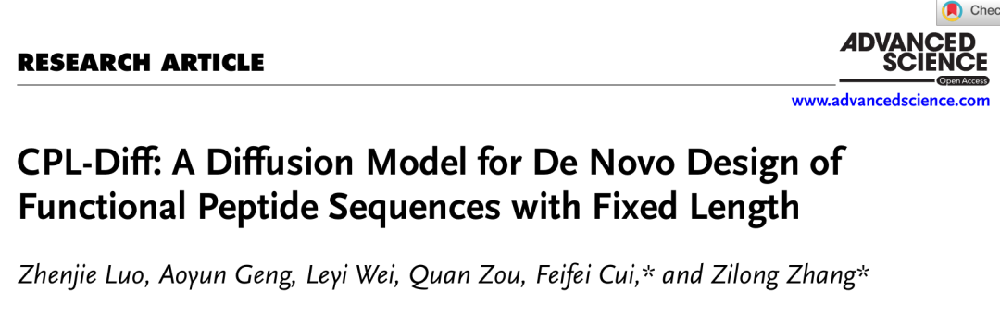
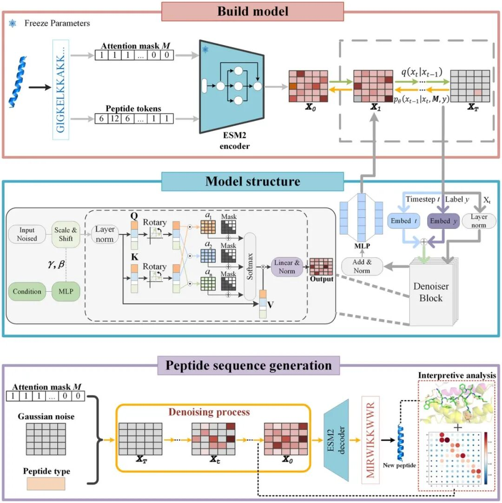
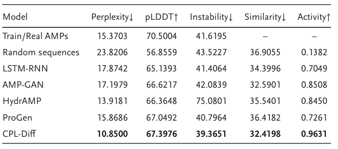

在新药研发领域，多肽凭借其结构短、功能强、安全性高的优势，被视为介于小分子和抗体之间的“黄金分子”。然而，如何设计出兼具特定生物活性（如抗菌、抗病毒、抗真菌等）与理想理化特性（如序列长度、电荷分布、疏水性）的新型多肽，一直是药物开发中的重大挑战。
近日，《Advanced Science》发表了一项突破性研究，提出名为“CPL-Diff”的多肽生成模型。该模型基于扩散模型架构，不仅能按需设计具有特定功能的多肽（如抗菌肽AMP、抗真菌肽AFP、抗病毒肽AVP），更首次实现了在多肽生成过程中对序列长度的“精确控制”。这一进展为功能多肽的AI驱动设计开辟了全新路径，显著提升了多肽药物开发的效率与精准度。

核心突破
此研究的核心突破，在于解决了功能多肽AI设计的两大根本性挑战：
严格的长度依赖性：治疗性多肽（以抗菌肽为例）的生物活性与安全性高度依赖于其长度。序列过短可能导致功能失效，过长则易引发毒性反应，而某些特定应用场景（如与MHC II分子结合）所要求的理想长度区间（例如18-20个氨基酸）极为苛刻。
现有生成模型的粗放控制：当前的主流AI模型缺乏精确的序列调控能力，在生成过程中往往产生远超目标长度的无效序列，或只能依赖后验分类器等间接手段进行粗粒度筛选，导致生成结果质量不佳。
技术亮点
CPL-Diff的成功之处，正是首次实现了对多肽序列长度的精准、可控生成，从而突破了上述瓶颈。
CPL-Diff 的核心技术优势体现在以下三个互为支撑的设计之中：
1. 基于Attention Mask的精准长度控制：模型在训练时将序列统一填充至60个氨基酸，而在生成时，通过纯注意力掩码（Attention Mask）将指定长度后的位置完全遮蔽。这使得模型在计算时完全“忽略”冗余部分，从而实现了零误差、无需额外分类器的固定长度生成，方法简洁而高效。
2. 统一的多功能生成架构：采用“一个模型解决所有问题”的理念，将抗菌、抗病毒、抗真菌等多种功能多肽数据共同训练。在生成时，借助分类器无关引导（Classifier-free Guidance）技术，仅需添加对应的功能标签（如“AMP”、“AVP”），即可按需生成特定功能的多肽，无需为每种功能重复训练模型。
3. ESM-2潜空间扩散提升生成质量：整个生成过程在ESM-2模型所提供的连续潜空间中进行，而非传统的离散氨基酸序列。这不仅使生成序列与训练集的平均相似度低于0.3，确保了高度新颖性，其困惑度（Perplexity）与理化性质也更接近天然多肽。经AlphaFold3结构预测与分子对接实验验证，生成的多肽具备优异的结合能力和稳定的结构。

实验结果
为全面评估CPL-Diff的性能，研究团队将其与LSTM-RNN、AMPGAN、ProGen、HydrAMP等多种主流生成模型进行了对比。实验结果表明，CPL-Diff在多个关键维度上均展现出显著优势：
1. 序列自然度更优：生成序列的伪困惑度最低，表明其更接近天然多肽的统计分布特征。
2. 结构可信度更高：经ESMfold进行结构预测，其平均pLDDT分值显著优于基线模型，证明生成序列可折叠为更稳定、可靠的三维结构。
3. 生物活性潜力突出：在针对抗菌、抗病毒等功能的体外活性预测中，多数生成序列获得了显著更高的评分，显示出强大的潜在应用价值。
4. 序列多样性卓越：与训练数据库的相似度显著更低，有效避免了序列重复，保证了生成结果的新颖性与创新性。
5. 长度控制精准无误：在5-50个氨基酸的广泛范围内，实现了近乎完美的指定长度生成，控长成功率接近100%。

项目已全面开源！所有代码、预训练模型、数据集及采样脚本均已发布在GitHub仓库，下载后即可快速运行，零门槛复现论文成果。
GitHub地址：https://github.com/luozhenjie1997/CPL-Diff